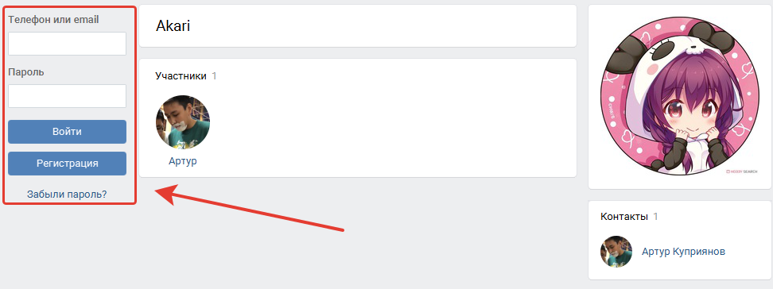
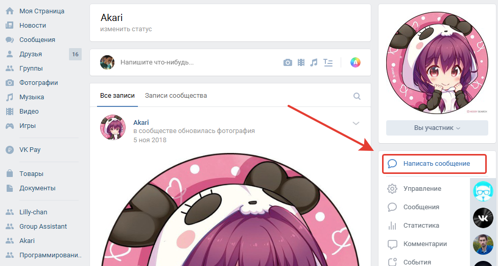
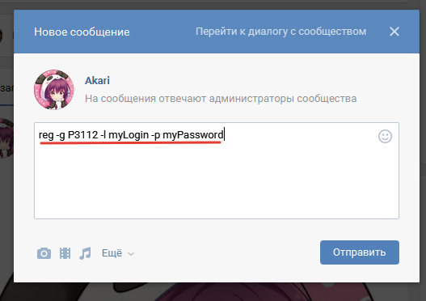
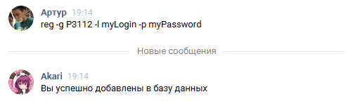
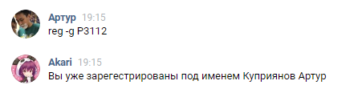

Это страница-гайд для регистрации в системе ITMO-XCORE.
Чтобы обезопасить вашу страницу Вконтакте, вам нужен собственный логин и пароль в систему ITMO-XCORE, чтобы
пользоваться сторонними приложениями, использующих ваши идентификационные данные, в данном случае: VK ID.
Таким образом, написав боту с собственной страницы, вы избежите угрозы потери доступа к своему аккаунту и
также поможете избежать фальшивых аккаунтов.
Процесс регистрации очень легкий и его можно сделать с любого
устройства, имеющим доступ в VK. Также, в самом приложении встроен браузер, с помощью которого вы также можете
зарегистрироваться.

Бот находится по адресу: vk.com/akaribot

Сообщение для полной регистрации имеет вид:
reg -g [номер группы] -l [логин] -p [пароль]

Если регистрация прошла успешно, то бот отправит вам об этом сообщение.

В этом также можно убедиться, отправив повторный запрос на регистрацию:

Чтобы перейти к регистрации нажмите сюда